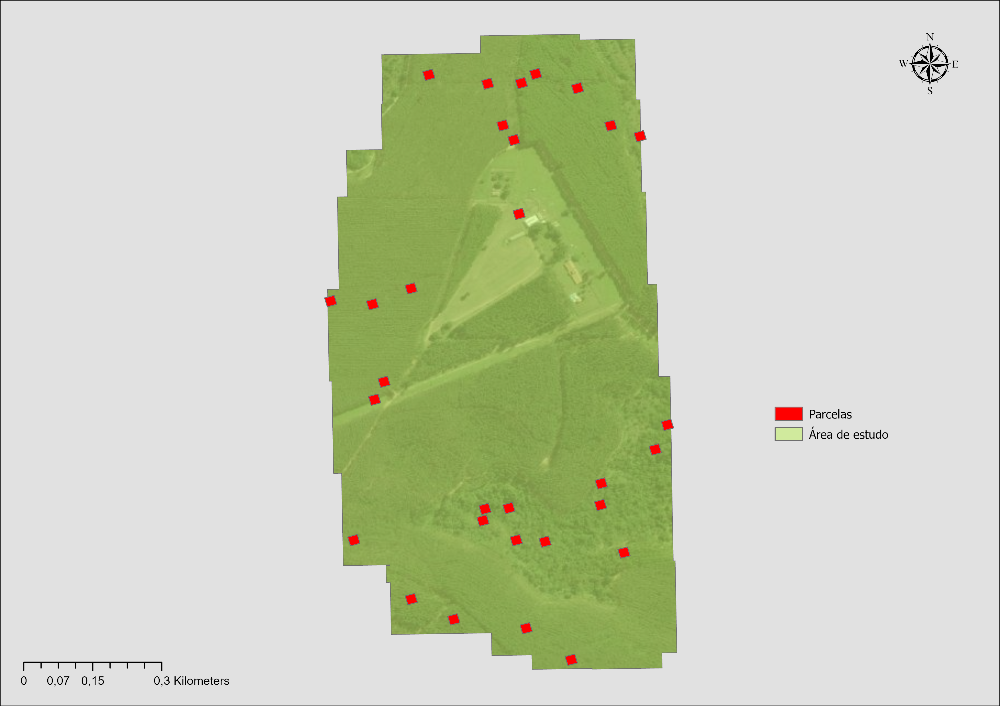
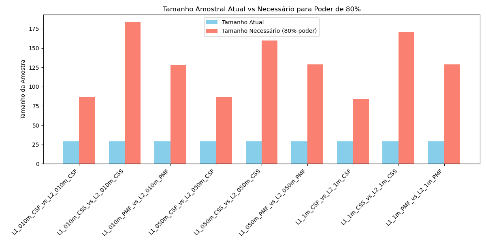
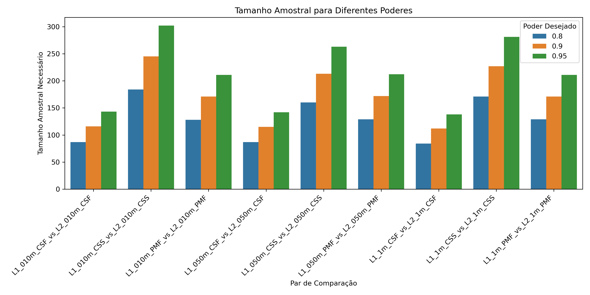

📄 Relatório Técnico: Definição do Tamanho e Quantidade de Parcelas Amostrais
🔎 Objetivo
Estabelecer, com base em critérios estatísticos e práticos, a área individual das parcelas e a
quantidade total necessária, visando garantir representatividade, precisão e
poder estatístico adequado para análises comparativas entre algoritmos de geração de Modelos Digitais do Terreno (MDT).
📍 Área de Estudo
- Localização: Angatuba - SP
- Área total: 81,06 hectares (ha)

🧪 Teste Piloto Inicial
- Número de parcelas: 29
- Área por parcela: 400 m² (ex: 20 m × 20 m)
- Total amostrado: 11.600 m² (~1,43% da área total)
- Tipo de análise: Teste t pareado
- Resultado: Poder estatístico observado variou entre 19% e 36%, insuficiente para conclusões robustas.

📊 Cálculo do Tamanho Amostral
Com base nos tamanhos de efeito observados no piloto, foi utilizado o método de análise de poder (TTestPower) para estimar o número mínimo de parcelas necessárias para alcançar níveis desejáveis de poder estatístico (probabilidade de detectar um efeito real quando ele existe).
➤ Parâmetros utilizados:
| Parâmetro | Valor |
| Teste | t pareado (bilateral) |
| Alfa (nível de sig.) | 0,05 |
| Poder desejado | 80%, 90%, 95% |
| Tamanhos de efeito | Entre 0,21 e 0,31 (médio-baixo) |
➤ Resultados:
- Para 80% de poder, são necessárias entre 110 a 185 parcelas, dependendo do par de algoritmos/resolução.
- Para 90%, entre 147 a 248 parcelas.
- Para 95%, entre 175 a 293 parcelas.

✅ Decisão Final
| Parâmetro |
Valor |
| Número de parcelas | 300 |
| Área de cada parcela | 400 m² (formato quadrado, 20×20 m) |
| Área amostrada total | 12 hectares |
| Proporção da área total | ~14,8% da área de estudo (81,06 ha) |
Essa configuração garante:
- Poder estatístico suficiente para detectar diferenças reais entre métodos.
- Amostragem espacialmente representativa da paisagem.
- Equilíbrio entre precisão estatística e viabilidade logística.
📚 Referências Estatísticas Utilizadas
- Cohen, J. (1988). Statistical Power Analysis for the Behavioral Sciences.
- G*Power Guidelines (Faul et al., 2009).
- Statsmodels –
TTestPower (Python)